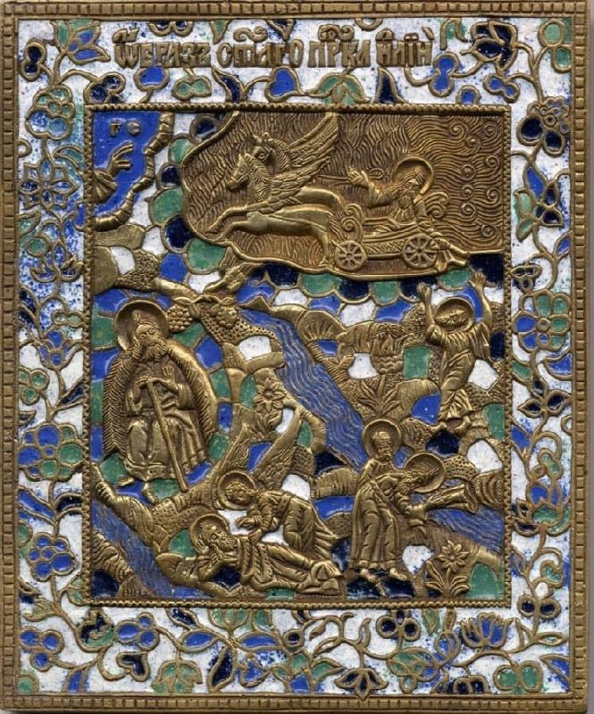
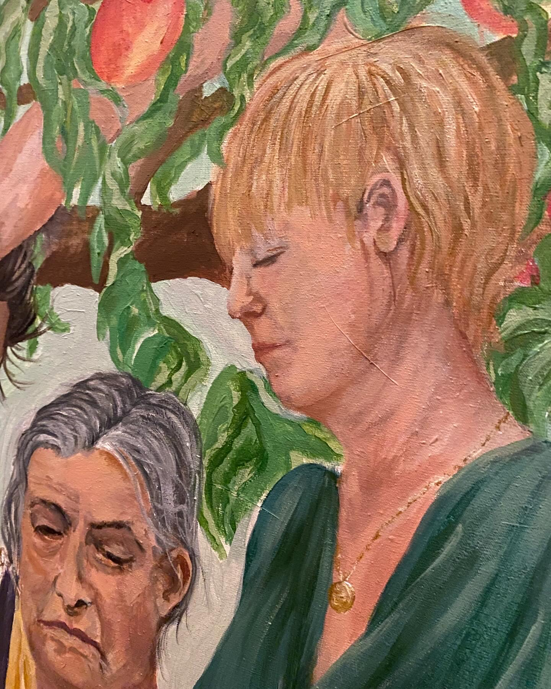
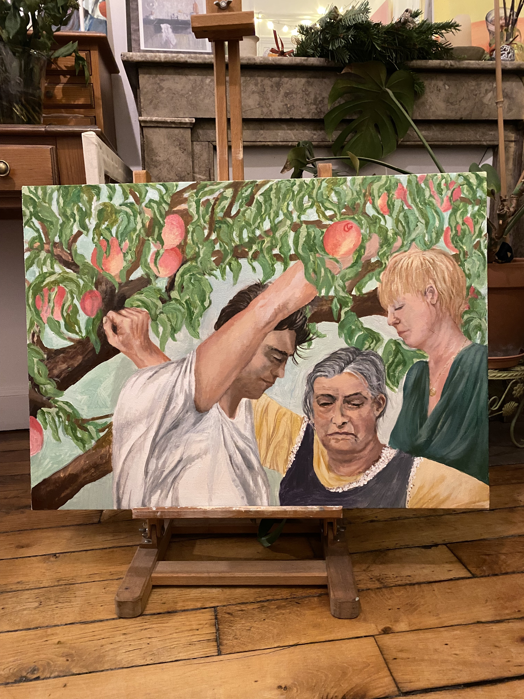
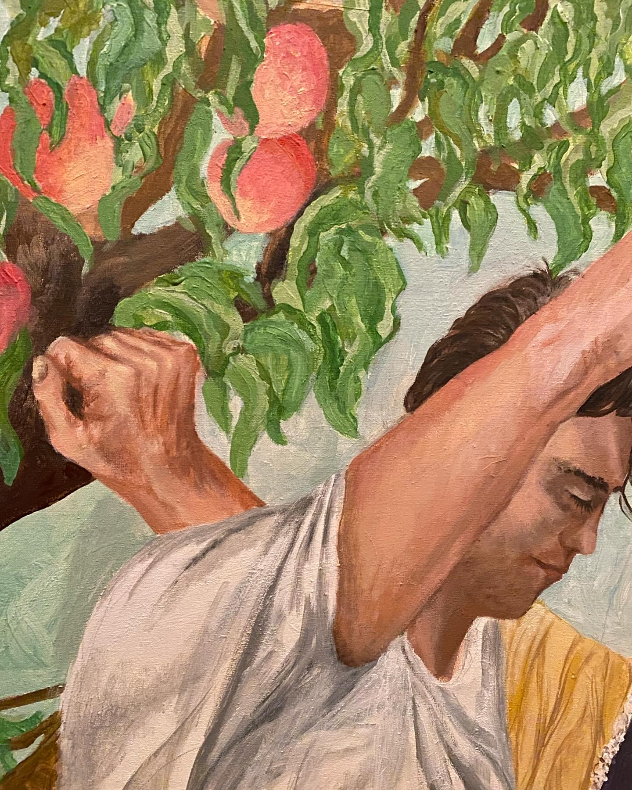
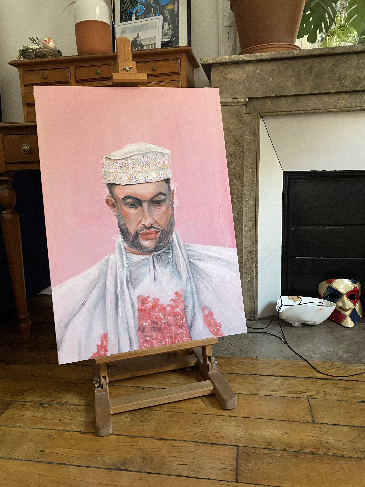
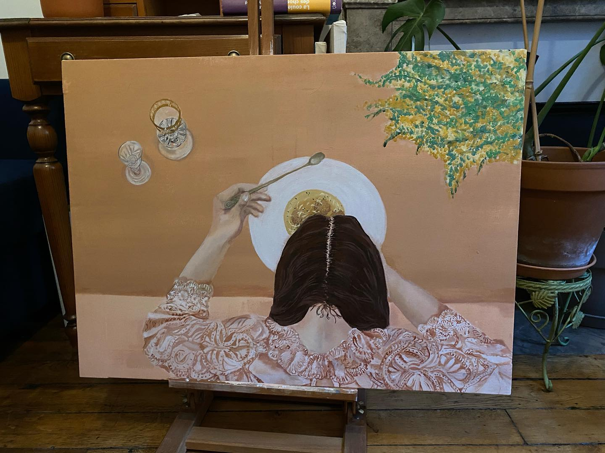

Prvotní letopis
- Chronique de Nestor -
Повѣсть времяньныхъ лѣтъ

Věci se daly do pohybu jako mračna
V překladu zněly jako nové elegie
итая икона со сценами из жития Илии Пророка
Москва конец 19 века
- Родион+Хрусталев

Paris 2024
54 x 73 cm
Détail du portrait


La Saison des pêches
Les trois générations au ramassage, près de la Voulte-sur-Rhône
«Toutes les âmes n’ont pas une égale aptitude au bonheur, comme toutes les terres ne portent pas également des moissons.»
- François-René de Chateaubriand

Paris 2024
54 x 73 cm
Peinture Acrylique

Hierophanie Temporelle II
Texte descriptif de la seconde œuvre.
«Je suis souvent saisi de cette évidence : l’autre est impé nétrable, introuvable, intraitable ; je ne puis l’ouvrir, remonter à son origine, défaire l’énigme. D’où vient-il ? Qui est-il ? Je m’épuise, je ne le saurai jamais.»
- Fragments d’un discours amoureux, R.Barthes
Paris 2025
40 × 60 cm
Peinture Acrylique

Hierophanie Temporelle III
Texte descriptif de la troisième œuvre.
Citation, note ou commentaire.